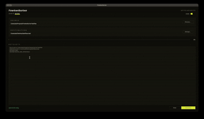

a local ai file sorter — it reads your documents and files them away, all on your own machine.
no api key, no subscription, no upload. regex handles the obvious calls, a local model handles everything it can't pattern-match.

the model runs on your own machine through ollama. no rate limits, no subscription, nothing ever leaves the box.
a course code like PROG23672 in the filename is school, full stop — the llm never even sees it. junk prefixes like IMG and SCAN are blocklisted so a photo doesn't read as a course.
the model answers against a json schema where the category is an enum, so it literally can't return a folder that doesn't exist. temperature's pinned to 0 — same file, same result, every time.
pulls text from .pdf, .docx, .pptx and .xlsx, and shrugs off malformed files instead of crashing on them.
built with customtkinter, and the sorting runs on a background thread so the window stays responsive. the stop button halts cleanly between files — nothing's ever left half-moved.
grabs the first ~1200 characters of a file. enough to know what it is, small enough to not blow past the context window.
hands that text to qwen2.5 7b with the schema, gets back a category, a subject, and a cleaned-up name.
makes the folder, renames to pascalcase, breaks any name collision with an epoch timestamp, and moves the file.
# 1 · install ollama + pull the model ollama pull qwen2.5:7b # 2 · clone + install the deps git clone https://github.com/zakiaminn/FrankenSorter.git cd FrankenSorter pip install -r requirements.txt # 3 · run it python3 FrankenSorter.py
deps: customtkinter · ollama · pdfplumber · python-docx · python-pptx · openpyxl